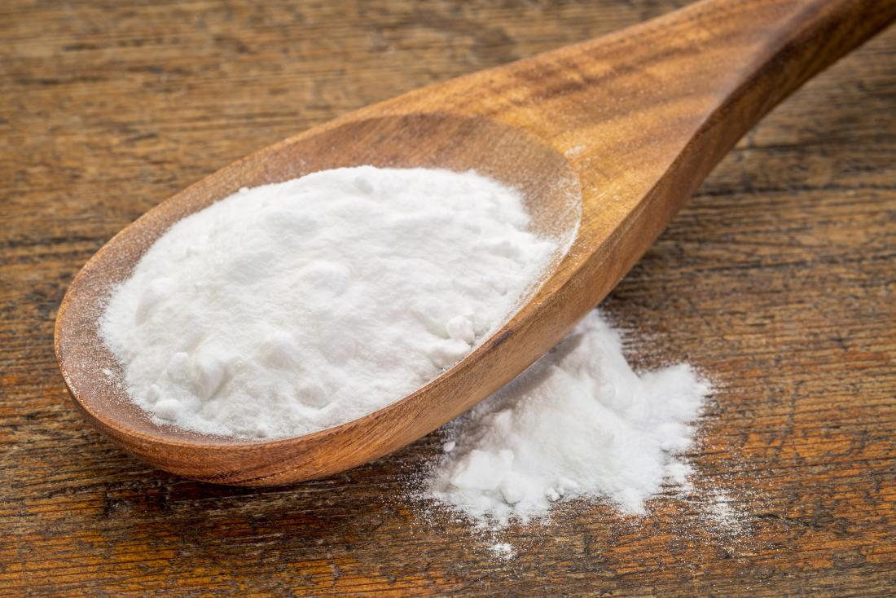
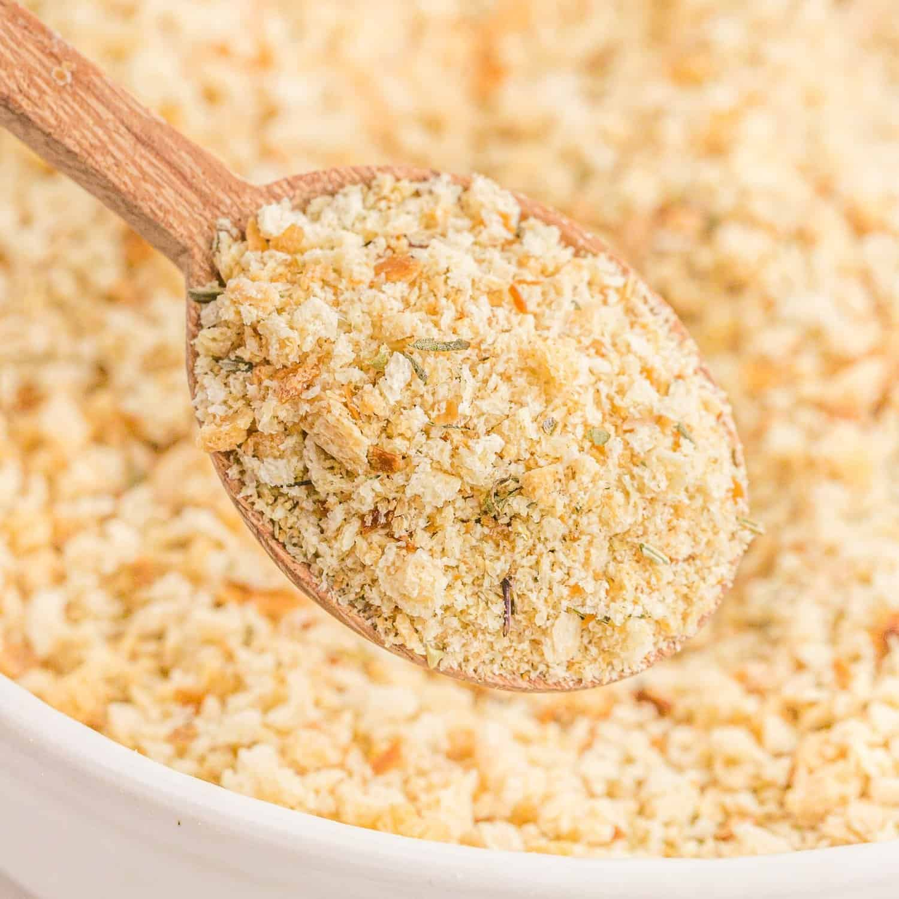
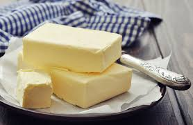
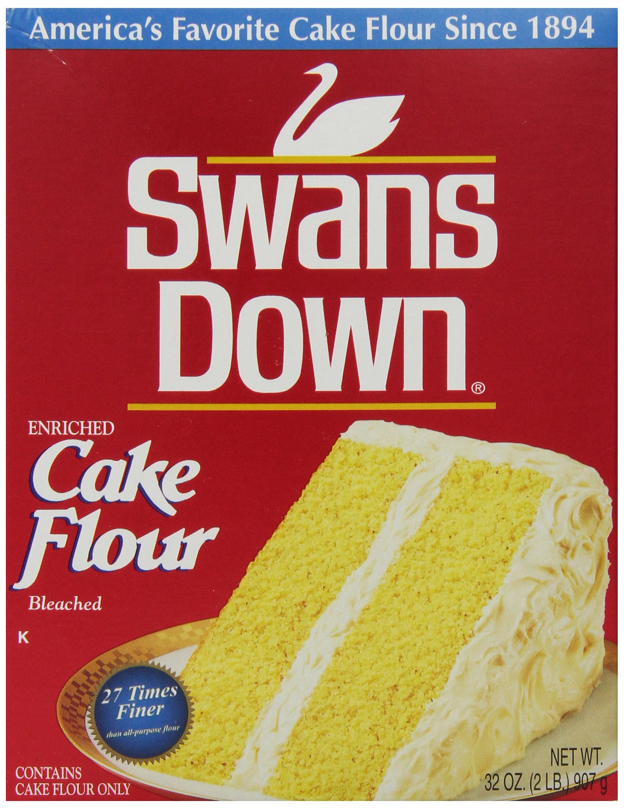
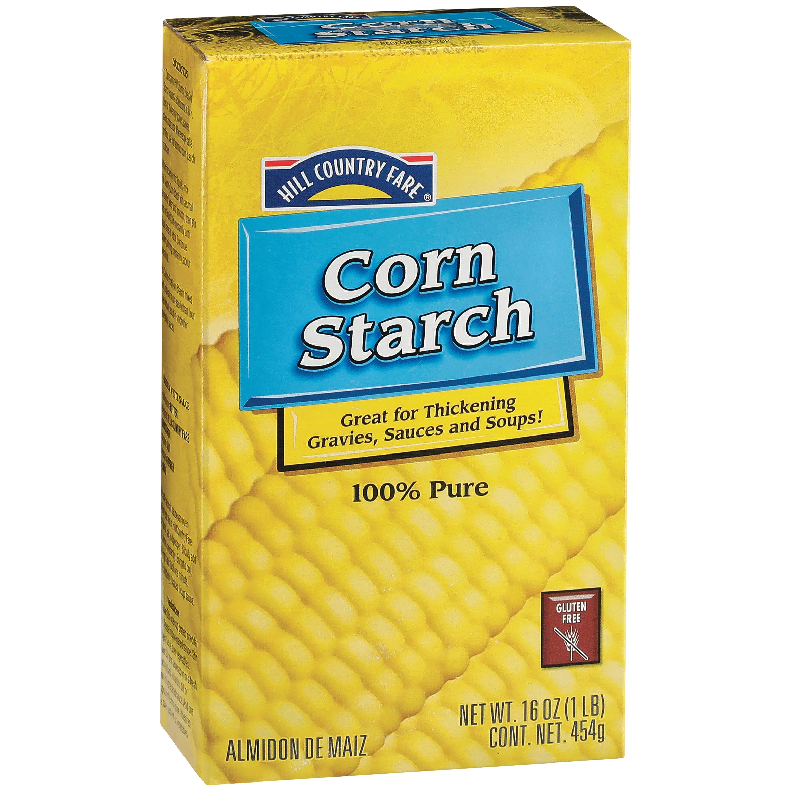
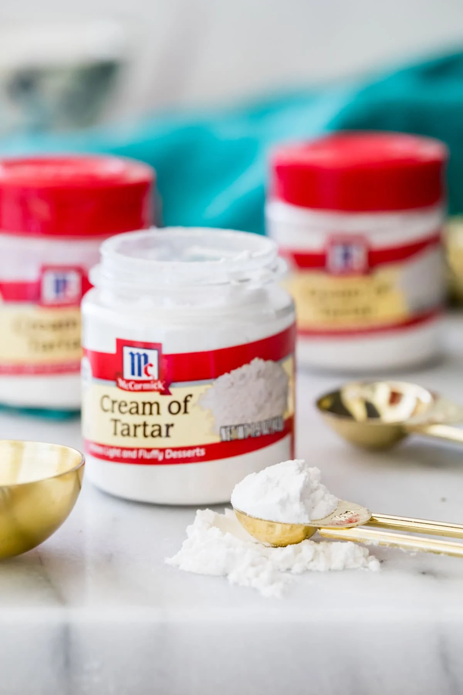
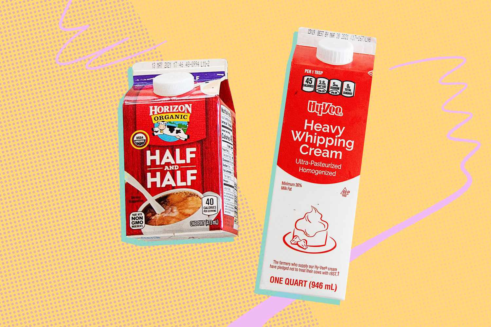

Substitutions
- Amount : 1 teaspoon
- Combine 1/4 teaspoon baking soda and 1/2 teaspoon cream of tartar. Bake immediately.
Baking soda

Substitutions
- Amount : 1/4 teaspoon
- 1 teaspoon baking powder
Bread Crumbs

Substitutions
- Amount : 1:1
- Ground rolled oats or crushed cereal
Butter

Substitutions
- Amount : 1:1
- Coconut oil, lard, or margarine can replace butter
Cake Flour

Substitutions
- 1 cup
- Add 2 tablespoons cornstarch to a 1-cup measuring cup; fill rest of the way with all-purpose flour
Cornstarch

Substitutions
- 1 tablespoon
- 1.5 tablespoons all-purpose flour
Cream of tartar


Substitutions
- 1/4 teaspoon
- 1/2 teaspoon lemon juice
Egg
Substitutions
- 1
- For yeast breads, cookies, pancakes, or waffles, mix 2 tablespoons ground flax meal and 3 tablespoons cold water. Let the mixture rest for 10 minutes before adding.
Half and Half

Substitutions
- 1/2 cup
- 1/4 cup milk and 1/4 cup cream, or 1/2 cup non-dairy coffee creamer